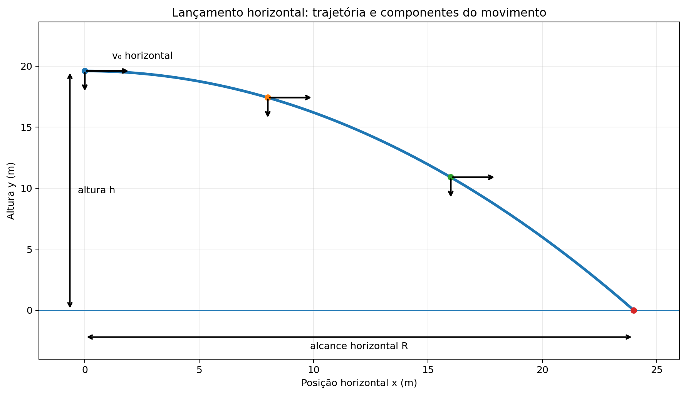
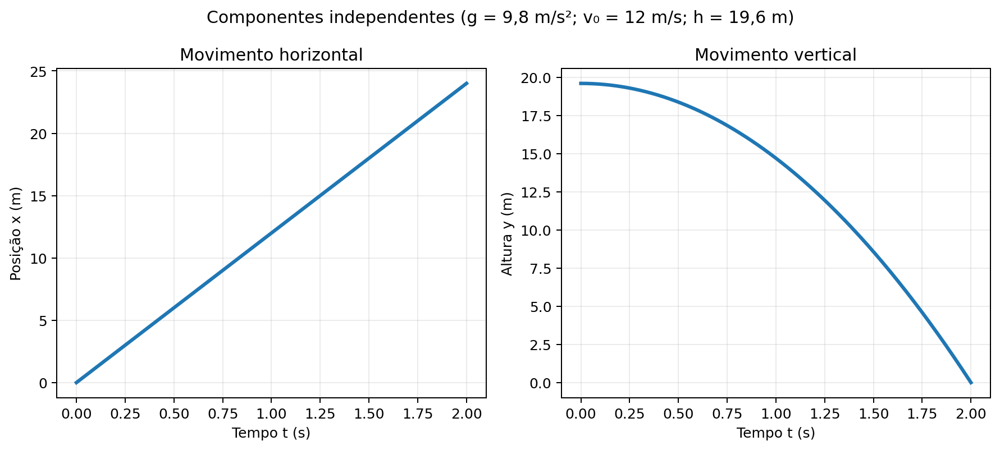

O lançamento horizontal é o movimento de um corpo lançado com velocidade inicial horizontal a partir de certa altura. Desprezando a resistência do ar, o movimento pode ser decomposto em dois movimentos independentes: horizontal uniforme e vertical em queda livre.
Horizontal: $a_x=0$, $v_x=v_0$ e $x=v_0t$.
Vertical: tomando o sentido para cima como positivo, $a_y=-g$, $v_y=-gt$ e $y=h-\frac12gt^2$.
As expressões pressupõem lançamento horizontal, aceleração gravitacional constante e resistência do ar desprezível.
📖 Lançamento Horizontal
1. O que caracteriza o lançamento horizontal?
Um corpo realiza lançamento horizontal quando deixa uma superfície ou dispositivo com velocidade inicial dirigida horizontalmente, sem componente vertical inicial. Depois de abandonar o lançador, se a resistência do ar for desprezada, a única aceleração é a da gravidade, vertical e para baixo.
O movimento não é horizontal durante toda a trajetória: a gravidade faz surgir uma componente vertical de velocidade, enquanto a componente horizontal permanece constante. A trajetória, portanto, é parabólica.
2. Decomposição do movimento
Para estudar o fenômeno, adotamos o eixo $x$ horizontal, positivo no sentido do lançamento, e o eixo $y$ vertical, positivo para cima. A origem pode ser colocada no solo diretamente abaixo do ponto de lançamento ou no próprio ponto de lançamento; as equações mudam conforme a origem escolhida. Aqui, usamos $x=0$ no ponto de lançamento e medimos a altura $y$ a partir do solo.
Eixo horizontal: a força gravitacional não possui componente horizontal. Assim, $a_x=0$ e $v_x=v_0$.
Eixo vertical: a velocidade vertical inicial é zero, $v_{y0}=0$, e a aceleração é $a_y=-g$.

Figura 1: A componente horizontal da velocidade é constante; a componente vertical aumenta em módulo devido à gravidade. Esquema ilustrativo, não necessariamente em escala.
3. Equações do movimento horizontal
Como a aceleração horizontal é nula, aplicamos as equações do movimento uniforme:
$$x=x_0+v_0t$$
Como escolhemos $x_0=0$, fica $\boxed{x=v_0t}$. Nessa expressão, $x$ é a posição horizontal (m), $v_0$ é a velocidade inicial horizontal (m/s) e $t$ é o tempo (s). A relação vale enquanto o corpo está em voo e a resistência do ar é desprezada.
4. Equações do movimento vertical
O movimento vertical é uma queda livre a partir do repouso vertical. Com o eixo positivo para cima, a aceleração é $-g$:
$$y=h-\frac{gt^2}{2} \qquad v_y=-gt$$
$y$ e $h$ são alturas em metros, $g$ é o módulo da aceleração da gravidade (em problemas próximos à superfície terrestre, costuma-se usar $9,8\,\text{m/s}^2$ ou, quando indicado, $10\,\text{m/s}^2$). A velocidade vertical inicial é zero. A expressão da altura é válida até o instante em que o corpo atinge o nível considerado como solo.

Figura 2: As posições horizontal e vertical variam de formas diferentes, embora compartilhem o mesmo tempo de voo.
5. Tempo de queda e alcance horizontal
Quando o corpo chega ao solo, sua altura é $y=0$. Substituindo na equação vertical:
O tempo de queda depende da altura e da gravidade, mas não da velocidade horizontal. O alcance é a distância horizontal percorrida durante esse tempo:
$$\boxed{R=v_0\sqrt{\frac{2h}{g}}}$$
Essa conclusão supõe solo horizontal no nível de referência, velocidade inicial estritamente horizontal e ausência de resistência do ar. Para uma mesma altura, duplicar $v_0$ duplica o alcance; para uma mesma velocidade, quadruplicar a altura duplica o tempo de queda e o alcance.
6. Velocidade resultante ao longo da trajetória
A velocidade total é a soma vetorial das componentes horizontal e vertical. Como elas são perpendiculares, seu módulo é:
$$v=\sqrt{v_x^2+v_y^2}=\sqrt{v_0^2+(gt)^2}$$
Logo, a rapidez aumenta durante a queda: a componente horizontal permanece constante e a componente vertical cresce em módulo. No instante do lançamento, $v_y=0$ e a velocidade resultante é horizontal; pouco antes do impacto, ela aponta para a frente e para baixo.
7. Erros comuns e limites do modelo
Não confundir o tempo de queda com o tempo necessário para percorrer o alcance horizontal.
Não supor que a velocidade total é constante: somente $v_x$ é constante no modelo ideal.
Não usar a velocidade horizontal na equação vertical, nem a aceleração da gravidade na equação horizontal.
O tempo de queda é o mesmo de um corpo abandonado do repouso verticalmente da mesma altura, desde que ambos estejam sob a mesma gravidade e a resistência do ar seja desprezível.
Em situações reais, resistência do ar, vento e variações de altura podem alterar a trajetória.
💡 Física em Ação
Jato de água saindo de uma bancada
Ao sair horizontalmente de uma abertura, a água começa a cair enquanto avança. A curvatura do jato ilustra a combinação entre movimento horizontal e queda vertical.
Robótica e transporte de objetos
Em modelos simplificados, prever onde um objeto lançado de uma plataforma atingirá o chão exige estimar sua velocidade horizontal e o tempo de queda determinado pela altura.
✅ Exercícios Resolvidos (R1 a R5)
R1: Tempo de queda
Enunciado: Uma esfera sai horizontalmente de uma mesa de $1,25\,\text{m}$ de altura. Despreze a resistência do ar e adote $g=10\,\text{m/s}^2$. Determine o tempo até tocar o chão.
Interpretação: a esfera permanece em voo por meio segundo, qualquer que seja sua velocidade horizontal inicial, dentro do modelo adotado.
R2: Alcance horizontal
Enunciado: Uma bolinha deixa uma plataforma de $0,80\,\text{m}$ de altura com velocidade horizontal de $3,0\,\text{m/s}$. Adote $g=10\,\text{m/s}^2$. A que distância horizontal da borda ela atinge o chão?
Primeiro calculamos o tempo de queda: $t_q=\sqrt{2h/g}=\sqrt{1,6/10}=\sqrt{0,16}=0,40\,\text{s}$. No eixo horizontal, $R=v_0t_q$.
$$R=3,0\times0,40=\mathbf{1,2\,\text{m}}$$
O alcance previsto é $1,2\,\text{m}$, supondo que o chão esteja no nível indicado e que o ar não altere o movimento.
R3: Determinação da velocidade inicial
Enunciado: Um objeto lançado horizontalmente de uma altura de $5,0\,\text{m}$ cai a $6,0\,\text{m}$ da vertical da borda. Considerando $g=10\,\text{m/s}^2$, determine sua velocidade horizontal inicial.
O tempo é obtido pela queda vertical: $t_q=\sqrt{2(5,0)/10}=\sqrt{1}=1,0\,\text{s}$. No eixo horizontal, $R=v_0t_q$, portanto $v_0=R/t_q$.
$$v_0=\frac{6,0}{1,0}=\mathbf{6,0\,\text{m/s}}$$
A velocidade inicial era horizontal e tinha módulo de $6,0\,\text{m/s}$.
R4: Velocidade vertical e velocidade resultante
Enunciado: Um projétil é lançado horizontalmente a $8,0\,\text{m/s}$ de uma altura de $20\,\text{m}$. Adote $g=10\,\text{m/s}^2$. Determine (a) o tempo de queda, (b) a componente vertical da velocidade no impacto e (c) o módulo da velocidade resultante imediatamente antes de tocar o solo.
A velocidade de impacto aponta para a frente e para baixo; seu módulo é maior que cada componente isoladamente.
R5: Comparação entre duas alturas
Enunciado: Duas esferas são lançadas horizontalmente com a mesma velocidade de $4,0\,\text{m/s}$, uma de uma altura de $5,0\,\text{m}$ e outra de $20\,\text{m}$. Com $g=10\,\text{m/s}^2$, determine o tempo de queda e o alcance de cada esfera. Compare os resultados.
A altura da segunda esfera é quatro vezes maior; por isso, seu tempo de queda é duas vezes maior, e o alcance também dobra. Isso decorre da dependência $t_q\propto\sqrt{h}$, não de uma relação linear entre altura e tempo.
✍️ Exercícios Propostos (P6 a P15)
P6: Tempo de queda
Enunciado: Uma moeda é lançada horizontalmente de uma altura de $3,2\,\text{m}$. Use $g=10\,\text{m/s}^2$. Quanto tempo ela leva para chegar ao chão?
Enunciado: Uma bolinha sai horizontalmente de uma prateleira de $1,25\,\text{m}$ de altura a $2,0\,\text{m/s}$. Adote $g=10\,\text{m/s}^2$. Calcule o alcance.
Resolução: O tempo é $t=\sqrt{2(1,25)/10}=0,50\,\text{s}$. Assim, $R=v_0t=2,0(0,50)=\mathbf{1,0\,\text{m}}$.
P8: Encontrando a velocidade horizontal
Enunciado: Um objeto cai de uma altura de $7,2\,\text{m}$ e atinge o solo a $9,0\,\text{m}$ da base. Considere $g=10\,\text{m/s}^2$. Determine $v_0$.
Resolução: O tempo é $t=\sqrt{2(7,2)/10}=\sqrt{1,44}=1,2\,\text{s}$. Logo, $v_0=R/t=9,0/1,2=\mathbf{7,5\,\text{m/s}}$.
P9: Componente vertical após certo tempo
Enunciado: Um corpo é lançado horizontalmente. Qual é sua componente vertical da velocidade após $1,5\,\text{s}$? Adote $g=9,8\,\text{m/s}^2$.
Resolução: Com o sentido para cima positivo, $v_y=-gt=-9,8(1,5)=\mathbf{-14,7\,\text{m/s}}$. O sinal negativo indica velocidade para baixo.
P10: Altura a partir do tempo de voo
Enunciado: Um pequeno objeto lançado horizontalmente leva $2,4\,\text{s}$ para atingir o solo. Use $g=10\,\text{m/s}^2$. De que altura foi lançado?
Resolução: Como $h=\frac12gt^2$, temos $h=0,5(10)(2,4)^2=5(5,76)=\mathbf{28,8\,\text{m}}$.
P11: Alcance com gravidade aproximada
Enunciado: Um pacote é lançado horizontalmente a $15\,\text{m/s}$ de uma altura de $45\,\text{m}$. Adote $g=10\,\text{m/s}^2$. Determine o tempo de queda e o alcance.
Enunciado: Uma esfera sai de uma mesa com $v_0=6,0\,\text{m/s}$ e atinge o chão após $0,80\,\text{s}$. Adote $g=10\,\text{m/s}^2$. Determine o módulo da velocidade imediatamente antes do impacto.
Resolução: A componente horizontal é $v_x=6,0\,\text{m/s}$ e a vertical é $v_y=-gt=-8,0\,\text{m/s}$. Portanto, $v=\sqrt{6^2+8^2}=\mathbf{10\,\text{m/s}}$.
P13: Comparação de alcances
Enunciado: Dois corpos são lançados horizontalmente da mesma altura, com velocidades iniciais $5\,\text{m/s}$ e $12\,\text{m/s}$. Despreze o ar. Qual é a razão entre os alcances $R_2/R_1$?
Resolução: O tempo de queda é igual, pois as alturas são iguais. Como $R=v_0t$, $R_2/R_1=v_{02}/v_{01}=12/5=\mathbf{2,4}$.
P14: Lançamento a partir de um penhasco
Enunciado: Uma pedra é lançada horizontalmente a $10\,\text{m/s}$ de um penhasco de $80\,\text{m}$. Use $g=10\,\text{m/s}^2$. Calcule o tempo de queda, o alcance e o módulo da velocidade de impacto.
Resolução: Tempo: $t=\sqrt{160/10}=4,0\,\text{s}$. Alcance: $R=10(4)=\mathbf{40\,\text{m}}$. No impacto, $v_y=-40\,\text{m/s}$ e $v=\sqrt{10^2+40^2}=\sqrt{1700}\approx\mathbf{41,2\,\text{m/s}}$.
P15: Análise conceitual
Enunciado: Dois objetos idênticos são lançados horizontalmente da mesma altura no mesmo instante, um com velocidade horizontal inicial maior que a do outro. Desprezando a resistência do ar, compare o tempo de queda e o alcance. Justifique.
Resolução: O tempo de queda é igual para ambos, porque depende apenas da altura e de $g$. O objeto com maior velocidade horizontal percorre maior alcance, pois $R=v_0t_q$ e o tempo é o mesmo.
🎓 Testes (T16 a T20)
T16: Conceito de independência dos movimentos
Enunciado: (ExataSite) Um corpo é lançado horizontalmente de uma mesa. Desprezando o ar, qual afirmação é correta?
A) A velocidade horizontal aumenta. B) A aceleração horizontal é igual a $g$. C) A componente vertical inicial da velocidade é nula. D) O corpo não sofre aceleração. E) A velocidade resultante é constante.
Gabarito: alternativa C. A componente vertical inicial é zero; após o lançamento, a gravidade faz a velocidade vertical aumentar em módulo.
T17: Tempo de queda
Enunciado: (ExataSite) Uma esfera é lançada horizontalmente de uma altura de $20\,\text{m}$. Adote $g=10\,\text{m/s}^2$. O tempo de queda é:
A) $1,0\,\text{s}$; B) $2,0\,\text{s}$; C) $4,0\,\text{s}$; D) $5,0\,\text{s}$; E) $10\,\text{s}$.
Gabarito: alternativa B. Pela equação vertical, $t=\sqrt{2h/g}=\sqrt{40/10}=2,0\,\text{s}$.
T18: Alcance horizontal
Enunciado: (ExataSite) Uma bola sai horizontalmente a $4,0\,\text{m/s}$ de uma altura de $1,25\,\text{m}$. Use $g=10\,\text{m/s}^2$. O alcance é:
A) $0,50\,\text{m}$; B) $1,0\,\text{m}$; C) $2,0\,\text{m}$; D) $4,0\,\text{m}$; E) $5,0\,\text{m}$.
Gabarito: alternativa C. O tempo é $t=\sqrt{2(1,25)/10}=0,50\,\text{s}$. Então $R=4,0(0,50)=2,0\,\text{m}$.
T19: Comparação com queda livre
Enunciado: (ExataSite) Do mesmo ponto e no mesmo instante, uma esfera é abandonada e outra é lançada horizontalmente. Desprezando a resistência do ar, qual chega primeiro ao solo plano?
A) A abandonada. B) A lançada horizontalmente. C) As duas chegam juntas. D) Depende da massa. E) Depende da velocidade horizontal.
Gabarito: alternativa C. As duas têm velocidade vertical inicial nula e a mesma aceleração vertical. O movimento horizontal não altera o tempo de queda.
T20: Velocidade no impacto
Enunciado: (ExataSite) Um projétil é lançado horizontalmente com $v_0=12\,\text{m/s}$ e cai durante $1,0\,\text{s}$. Adote $g=10\,\text{m/s}^2$. O módulo da velocidade imediatamente antes do impacto é aproximadamente:
A) $2,0\,\text{m/s}$; B) $10\,\text{m/s}$; C) $12\,\text{m/s}$; D) $15,6\,\text{m/s}$; E) $22\,\text{m/s}$.
Gabarito: alternativa D. No impacto, $v_x=12\,\text{m/s}$ e $v_y=-10\,\text{m/s}$. Assim, $v=\sqrt{12^2+10^2}=\sqrt{244}\approx15,6\,\text{m/s}$.